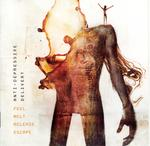

Home Artist links Label link

Anti Depressive Delivery - Feel Melt Release Escape
| Artist: | Anti Depressive Delivery |
| Title: | Feel Melt Release Escape |
| Label: | The Lasers Edge LE1040 |
| Length(s): | 60 minutes |
| Year(s) of release: | 2004 |
| Month of review: | [02/2005] |
Line up
Pete Beck - lead, backing vocals
Christian Boholt - guitars
Tom Welhaven Wahl - bass
Terje Krabol - drums, percussion
Haakon-Marius Pettersen - hammond, rhodes, mellotron, piano, synths, backing vocals
Tracks
| 1) | End Of Days | 5.18
|
| 2) | Coward | 5.00
|
| 3) | Voyage Of No Brain Discovery | 5.21
|
| 4) | Path Of Sorrow | 4.30
|
| 5) | Penny Is A Slut Machine | 5.19
|
| 6) | Feel, Melt, Release, Escape | 6.02
|
| 7) | 0 | 5.16
|
| 8) | The Anti-depressive Delivery | 7.17
|
| 9) | Bones & Money | 15.22
|
Summary
Anti-Depressive Delivery are making their debut with this one, taking the member's experience from such heavy progressive bands as Figleaf and Griffin.
The music
Opener End Of Days is a track well akin to the more progressive material of Led Zeppelin. It has a droning feel, although quite progressive too. Coward continues from this premise, but in the length of the track the band make room for an instrumental intermezzo that is more complex, less obviously melodic. The heavy feel of the music remains present though.
Voyage Of No Brain Discovery opens heavily with metally guitars and the fast bass drums you hear in death metal. The strength of the vocals now lies more in line with Deep Purple type bands.
With its high pitched vocals and melancholic feel Path Of Sorrow differs in style from the previous material. The heavy synths now manage to make more room for themselves, no longer suffering from the guitar domination. The ending changes to a style with a lot of percussion and differently pitched vocals, creating the sort of feel created by Ritual.
Penny is heavy on the Hammond, with a quirky guitar lick thrown in every once in a while moving towards a pretty climatic bridge that turns out to be almost the end of the track. The title track starts with highly electronic sounding synths, to be quickly washed away by heavy mellotron and develop into another one of those heavy tracks.
0 starts with quirky synths coming up during the track every once in a while. The vocal sections on this one at times drag a little, just to draw afloat by the guitars.
Conclusion
On this album Anti-Depressive Delivery take a mid seventies heavy sound and blend in some newer more metal directed elements. Having said that, I would say that this album would find its fans more with those into such bands as Led Zeppelin and Deep Purple than it would with those into death metal.
I would not call the band's sound particularly original without wanting to call it derivative. This album has become a collection of good songs played inside the vocabulary of mid seventies heavy progressive. Even though staying firmly within the same range, by the addition of the odd sound here and there the tracks each obtain their own little unique side. Result tastes pretty good.
© Roberto Lambooy